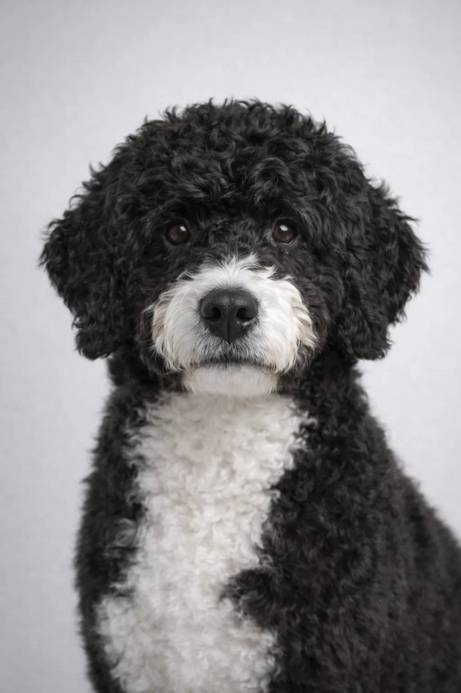

Portuguese Water Dog
Созданный для приключений — Portuguese Water Dog needs plenty of exercise и mental stimulation.
17-22 in
35-59 lbs
Оценки Породы
Темперамент
Обзор
Portuguese Water Dog — атлетичные, умные собаки, выведенные помогать рыбакам. Они энергичны, любят воду и стали знамениты как собаки семьи Обама..
Темперамент
Португальская водяная собака известна своей ласковостью, авантюрностью и атлетичностью. Они прекрасно ладят с детьми и становятся замечательными семейными питомцами. Их интеллект и стремление угодить делают дрессировку приятной. Early socialization helps them develop into well-rounded компаньонs.
Здоровье
В целом здоровая порода с продолжительностью жизни 11-13 лет. Распространённые проблемы включают заболевания суставов и кожные болезни. Регулярные ветеринарные осмотры и профилактический уход важны. Поддержание здорового веса помогает предотвратить многие проблемы со здоровьем.
Физическая Активность
Высокоэнергичная порода, требующая интенсивных ежедневных нагрузок — не менее часа активности. Процветает в активных семьях, любящих активный отдых. Умственная стимуляция через тренировки и игрушки-головоломки не менее важна. Без достаточной нагрузки могут развиться поведенческие проблемы.
⦿ Подходит Ли Вам Эта Порода?
✓ Лучше Всего Для
- Активные семьи
- Аллергики
- Любители воды
- Те, кто любит дрессировку
- Дома рядом с водоёмами
✗ Не Подходит Для
- Малоподвижный образ жизни
- Не любящие уход
- Те, кто часто бывает вне дома
Наш Вердикт: Атлетичные, умные водолазные собаки. Portuguese Water Dog гипоаллергенны и отлично поддаются дрессировке, но требуют значительной физической активности и ухода.